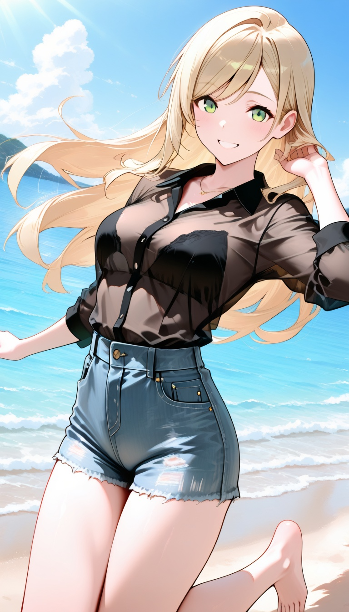
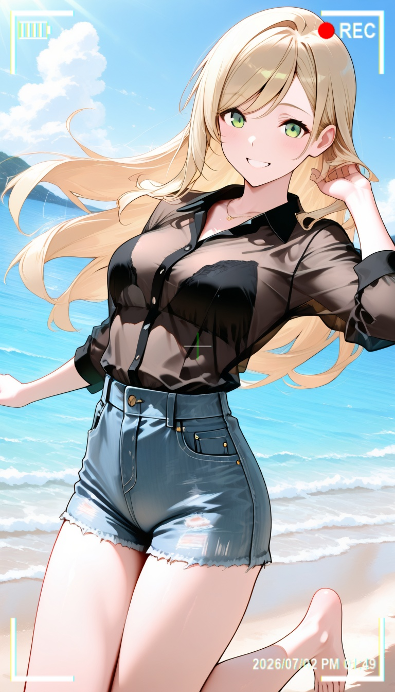

01 / ORIGIN STORY
「こちらに微笑みかける女の子」と目が合った日
THE ARTISAN'S PERSPECTIVE // INSIGHT
“
AI画像生成をしていた時。こちらに視線を向け、柔らかく微笑みかける女の子の画像が生まれました。
『すごく可愛い。でも、もっと“そこにいるリアリティ”を出せないだろうか？』
ふと思いついたのが、ビデオカメラのファインダーでした。
四隅のL字枠、赤丸のREC表示、緑の電池マーク、そして右下に刻まれた撮影日時。
それらを重ねた瞬間、絵の中に『レンズを構えている撮影者の視線』が生まれました。
ただの生成画像が、まるで『旅先でふと目が合って、思わずシャッターを切った記録写真』のように息づき始めたのです。
Visual Evidence BEFORE → AFTER
visibility レンズ越しの記憶が立ち上がる
BEFORE
Raw AI Generation (未加工)

美しいが「記号的なイラスト」。被写体と鑑賞者の間に距離があり、画面の向こう側の世界として見えてしまう。
AFTER (2000s デジカメ風オーバーレイ)
Timestamp: 2026/07/02

四隅のファインダー枠と日時が乗ることで、「この瞬間、誰かがカメラを向けた空気感」が宿り、実在感が跳ね上がる。